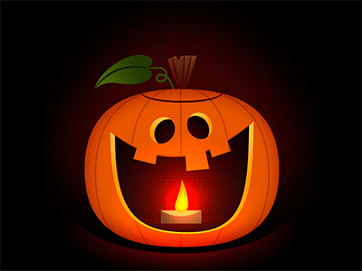

The History Of Some Of Your Fave Halloween Traditions Are Creepy AF
Supernatural Energy Informs Fortune Tellers
In Celtic traditions, Halloween, or Samhain as it was called, was a day when the line between the living and the dead was blurred, according to History.com. On this day each year, Celtic priests known as Druids were able to communicate with the spirit world and bring back fortunes for the coming year.
"For a people entirely dependent on the volatile natural world, these prophecies were an important source of comfort and direction during the long, dark winter," History.com reported. "To commemorate the event, Druids built huge sacred bonfires, where the people gathered to burn crops and animals as sacrifices to the Celtic deities. During the celebration, the Celts wore costumes, typically consisting of animal heads and skins, and attempted to tell each other’s fortunes."
Jack-o-Lanterns Ward Off Evil Spirits
If you stop and think about it, craving a face on a gourd, putting a candle in it, and setting it out on your porch is pretty weird. However, it's something most people have always done without questioning why it's part of celebrating Halloween. The story behind the Jack-o-Lantern is actually pretty creepy.
Mental Floss reported that the tradition of carving Jack-o-Lanterns is based in Ireland, though it began with turnips instead of pumpkins. Legend has it that a man named Stingy Jack trapped the devil, and said he would only let him go if the devil promised Jack he would never go to hell. The devil agreed, but Jack failed to consider that not going to hell didn't mean he would go to heaven either.
Jack ended up in what is known as purgatory in some religious traditions, and he was condemned to roam the earth as a ghost for all of eternity. "His old friend, the devil, gifted Jack a lump of burning coal, which Jack carried around in a carved-out turnip to light his way," Mental Floss noted. "Locals began carving frightening faces into their own gourds to scare off evil spirits such as Jack of the Lantern."
Bats Bring Ghosts
OK, I am not a fan of bats, and have actually dealt with trying to get one out of the house on more than one occasion. What I didn't know, according to Live Science, is that Medieval folklore suggests that bats might have been letting spirits into my house. Um, no thank you!
"One myth was that if a bat was spotted flying around one's house three times, it meant that someone in that house would soon die," Live Science reported. "Another myth was that if a bat flew into your house on Halloween, it was a sign that your house was haunted because ghosts had let the bat in."
Costumes Help People Blend In With Spirits
Multiple sources cite that the origin of the Halloween costume actually has a practical purpose — to blend in with spirits. During Samhain, Celtic people believed there was a heightened ability to communicate with the spirit world, and not everyone thought that was a good idea, so they tried to blend in with them instead.
"To fake out the ghosts, people would don disguises so they would be mistaken for spirits themselves and [be] left alone," Mental Floss reported.
Witches Transform Into Black Cats
Black cats have become so synonymous with Halloween that, in order to protect the felines, most animal shelters won't allow adoptions of black cats on Halloween, according to The Spruce. The myth that relates black cats to witches goes back to the Middle Ages — despite this legend being totally false, many people still fear black cats, and they tend to be the most overlooked pets in animal shelters.
Once the most worshipped creatures in the animal kingdom thanks to the Egyptians, the popularity of cats began to decline in the Middle Ages, according to Today I Found Out, because people started to associate them with witches.
As a massive and irrational fear of witchcraft washed over Europe at a feverish pace, stray cats that were often tended to by old women who were feared to be witches. Single, elderly women were accused not only of witchcraft, but also of being able to actually transform themselves into black cats. Side note: I have a black cat, and I have never once used him to transform myself into a black cat — as far as you know ...
Spiders Symbolize Spirits
I'm pretty scared of spiders. And by "pretty scared" I mean terrified. When I saw a giant wolf spider scurrying across the living room a few months ago it took every ounce of self control not to scream and wake up my roommate. According to Live Science, spiders can have two meanings on Halloween — one comforting and one scary.
"One superstition held that if a spider falls into a candle-lit lamp and is consumed by the flame, witches are nearby," Live Science reported. "And, if you spot a spider on Halloween, goes another superstition, it means that the spirit of a deceased loved one is watching over you."